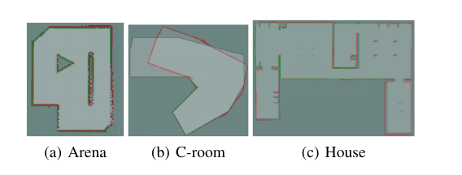
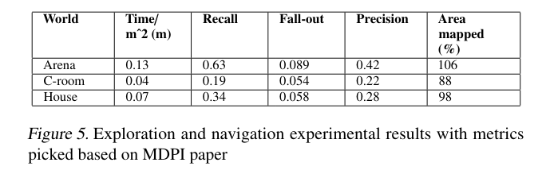
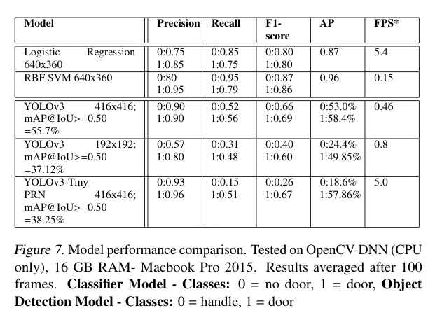
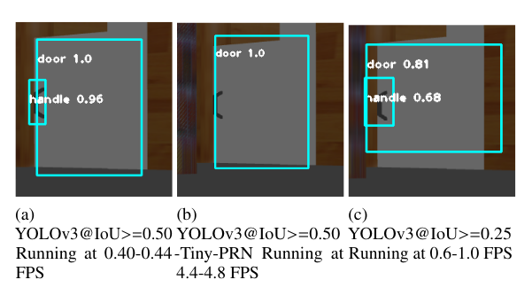
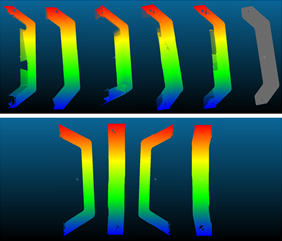

                <div id="corps_central"> 
            
                    <div id="corps_central"> 
                        <h1 style="text-align: center;"><u><b>Evaluation</b></u></h1>


                        <p>
                        We ran a number of tests in simulation to demonstrate the effectiveness of Dr.Phil's components, as well as to make decisions on the best method to use based on empirical evidence.
                        </p>
                        <h2>SLAM navigation testing</h2>
                        <p>We used three different worlds to evaluate the effectiveness of the SLAM mapping stack and see if it sufficiently maps out a normal working environment.</p>
                        

                        <p>We ran the mapping behaviour of Dr.Phil in each world, and compared the results to a ground truth occupancy map we generated for each map. A confusion matrix was generated like for a binary classifier where positives signified occupied cells and negatives the free cells.</p>

                        
                        <p>As seen above, Dr.Phil performed best in Arena, and was good in House as well. The issue with C-room was that it's spacious and feature-less, so SLAM struggled to capture the true area. However the shape was still mostly correct. As most offices and hospital rooms are feature-rich, we believe our mapping will perform well in our main target markets.</p>

                        <p>The probability of a collision of the robot with a blind pre-programmed agent was estimated at ~1/3 in another experiment where maps generated were given to the robot while it was tasked to follow a pre-recorded trajectory (3 times), twice, once with un-mapped static and dynamic obstacles (moving back and forth through the robot's path at 0.5 m/s). Note that only collisions in which the robot did not attempt to avoid the obstacle were counted. The true and localized path was also measured, no correlation between localization error and the presence of obstacles was found. The absolute localization error per measurement was on average 0.03m in arena and house worlds and 0.3m in c-room. This is to be expected since the c-room map did not preserve the area or length of the room, otherwise the robot localized very accurately using reasonable maps.</p>
                        <h2>Door handle recognition</h2>
                        <p>The door handle recognition algorithm had to be fast enough to process the video feed from the camera, but also detect all of the door handles that are seen (high recall). After generating our door handle dataset, we decided to train some different models to test their performance on classification.</p>

                        

                        <p>We initially chose Linear regression and SVM due to their speed and familiarity, which is important as the Raspberry Pi isn't very powerful and the recognition has to be real time. From research papers, we also identified YOLOv3 as a contender. Although YOLOv3 uses neural networks, it's still relatively fast compared to CNNs due to it's implementation.
                        </p>
                        <p>
                            Despite the better recall shown for the Logistic Regression and SVM models, they performed poorly upon classifying doors from afar in implementation testing. This can be attributed to being overfit to the closer samples in our dataset. Thus we chose to opt for the YOLO models as they are less prone to overfitting as shown by adding real world doors samples to the dataset.
                        </p>
                        
                        <p>The main issue with the YOLOv3 model was that the FPS was very low, ~0.5 fps at the same 416x416 resolution, although it had better performance. Even though Tiny-PRN has poor recall on the handle, we realised that lowering the confidence score (the amount of certainty the model has that the door is present) allows us to detect and move to doors more optimistically, and once Dr.Phil gets closer the resolution on the door handle will increase, making it more likely to be detected. In the end, we chose the YOLOv3-Tiny-PRN model as lowering the confidence score partially compensated for the low recall issue.</p>

                          

                            <h2>Spray coverage test</h2>
                        <p>The disinfecting behaviour has to perform excellent, as a improperly disinfected door would still potentially be dangerous. Gazebo doesn't have a "spray" plugin where we can measure the coverage easily. Therefore, we had to use a depth camera on the arm where the nozzle is. The depth camera generates a cloud of points when it hits an object. The camera specification is modified so the view has the same shape as the nozzle spray. We then combine all of the pixels generated over the course of disinfection and compare it to the base handle to get an estimate of the total coverage. We used this estimate to get an idea of the quality of our arm/disinfectant planning.</p>
                        
                        <p>We found that Dr. Phil was able to disinfect approximately 85% of the surface of interest in our tests, when only accounting for direct spraying area (no drippage), the true coverage would likely be above this value.</p>


                        <h2>User studies</h2>
                        <p>We performed a quick user study on the app. The tests were primarily to make sure that all of the app's functionality was clear, even to first-time users unfamiliar with the system. We also wanted to make sure the app was accessible and visually coherent. As we've only developed an iOS app, half of the testers would be likely be unable to use the app. With this in mind, we created a google form which showcased the main app screens.</p>

                        <p>We gathered our participants from another SDP group, and received 7 responses in total. Although this is a relatively low number, as stated in the accessibility workshop only 5 participants is enough to capture the super-majority of obvious problems.</p>

                        <p>We asked the particpants what they would do to perform an emergency halt from relevant app screen, as well as reading scheduling information from the app. We also asked them to rate the design/consistency of the UI out of 5, and open-ended questions about parts of the UI that they felt were not clear.</p>

                        <table class="table table-striped table-light">
                            <thead class="table-dark">
                              <tr>
                                <th scope="col">Question</th>
                                <th scope="col">User 1</th>
                                <th scope="col">User 2</th>
                                <th scope="col">User 3</th>
                                <th scope="col">User 4</th>
                                <th scope="col">User 5</th>
                                <th scope="col">User 6</th>
                                <th scope="col">User 7</th>
                                <th scope="col">%/mean</th>
                              </tr>
                            </thead>
                            <tbody>
                              <tr>
                                <th scope="row">How often does the Dr.Phil clean on weekends?</th>
                                <td>Wrong</td>
                                <td>Correct</td>
                                <td>Correct</td>
                                <td>Correct</td>
                                <td>Correct</td>
                                <td>Correct</td>
                                <td>Correct</td>
                                <td>6/7</td>
                              </tr>
                              <tr>
                                <th scope="row">What would you press to stop Dr.Phil from this page?</th>
                                <td>Wrong</td>
                                <td>Correct</td>
                                <td>Correct</td>
                                <td>Correct</td>
                                <td>Correct</td>
                                <td>Correct</td>
                                <td>Wrong</td>
                                <td>5/7</td>
                              </tr>
                              <tr>
                                <th scope="row">How visually consistent is the app?</th>
                                    <td>5</td>
                                    <td>5</td>
                                    <td>5</td>
                                    <td>5</td>
                                    <td>4</td>
                                    <td>5</td>
                                    <td>5</td>
                                    <td>4.8</td>>
                              </tr>
                              <tr>
                                <th scope="row">How visually appealing is the app?</th>
                                <td>3</td>
                                <td>4</td>
                                <td>3</td>
                                <td>5</td>
                                <td>3</td>
                                <td>5</td>
                                <td>5</td>
                                <td>3.4</td>
                              </tr>

                            </tbody>
                        </table>

                        <p>From the user study, we found some users had issues with submitting the stop request as the button is not in an obvious location. We also found that the word select appeared too much like a pressable option. The app was also not particularly visually appealing, but this is something easily improveable before launch. </p>


                    </div>	
                </div>

